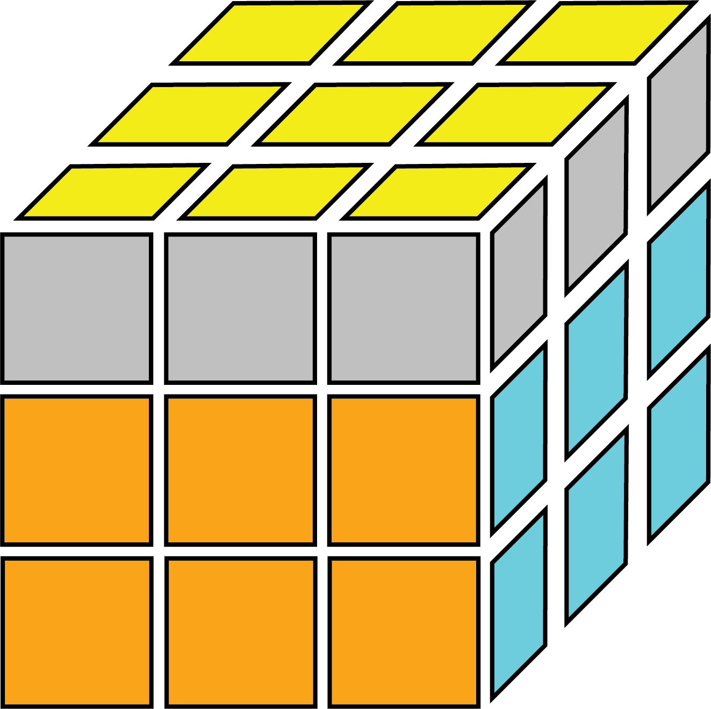
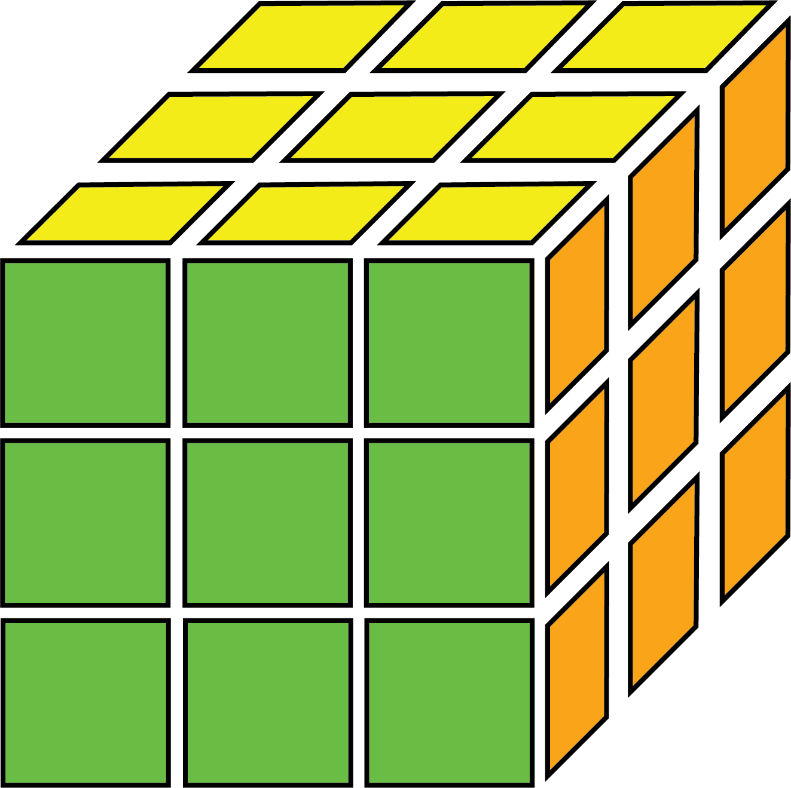
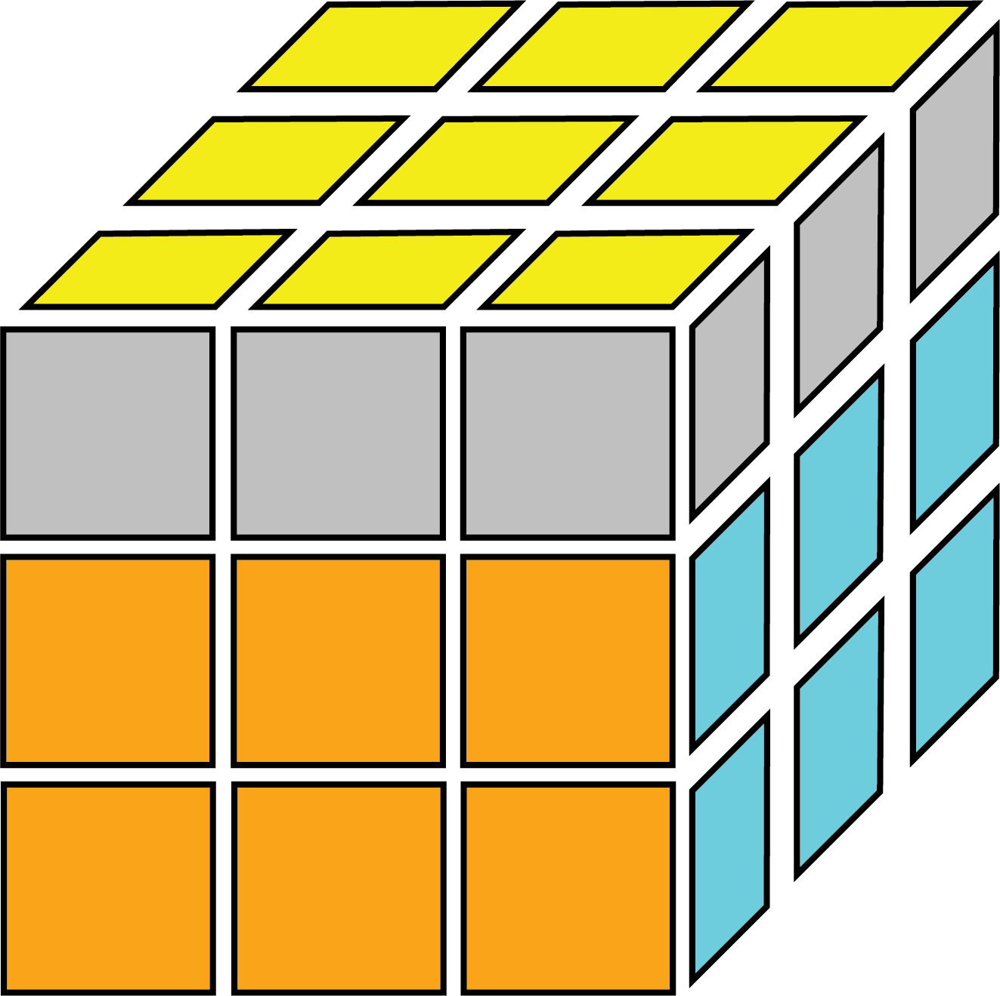
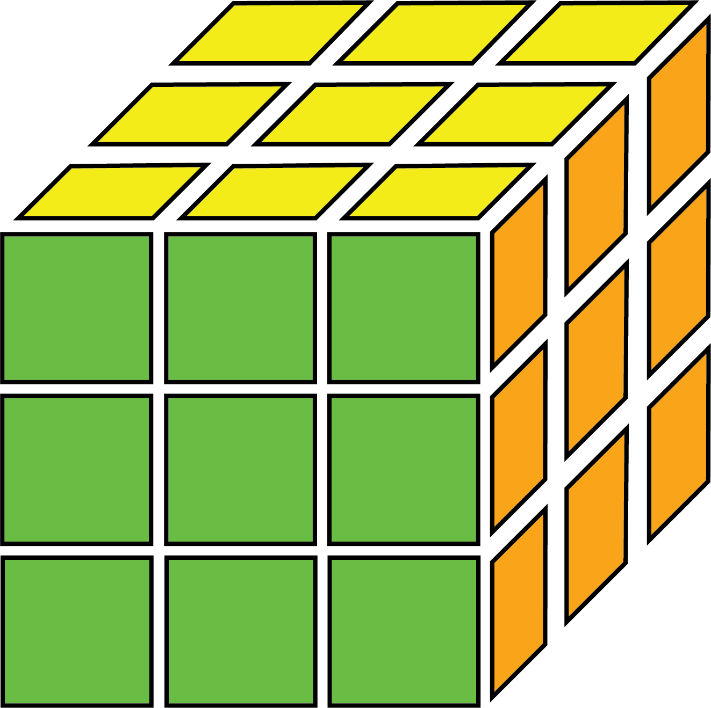

How to Solve the Rubik's Cube: CFOP Method
Introduction
This is a guide to learning how to use the four-step Fridrich/CFOP method (Cross, F2L, OLL, PLL) to solve the 3x3 Rubik's cube, this means that this guide will not cover simplier variations such as 4 look last-layer.
The CFOP/Fridrich method is the most commonly used method by speed solvers, and is used by beginners and world record holders alike. While the CFOP method is less intuitive to learn, this can be an advantage for beginners, as the method mostly relies on the solver's muscle memory instead of making complex desisions mid-solve.
The CFOP/Fridrich method consists of only 4 steps, can usually be done in less than 10 seconds at the highest levels. The CFOP method has the advantage of being (statistically) the fastest method to solve a Rubik's cube, due to a combination of high popularity, leading to many optimizations, and has the most ergonomic algorithms, using much less slice turns. While this method has more steps than other commonly used methods, and require a lot of memorization, this can allow people who are not familliar with a Rubik's cube to pick up this method easier.
The cube is commonly solved with the white side on top for the cross, yellow on the bottom for the cross, so this guide will assume this colour orientation of the cube. However, this is not required. It is recommended to first learn the beginner's method first, as this guide will build on steps and terminology covered in the beginner's method. The CFOP/Fridrich method is best suited for people after they have become proficient at the beginner's method (usually when you can get 30 second solves).
Steps:
 


